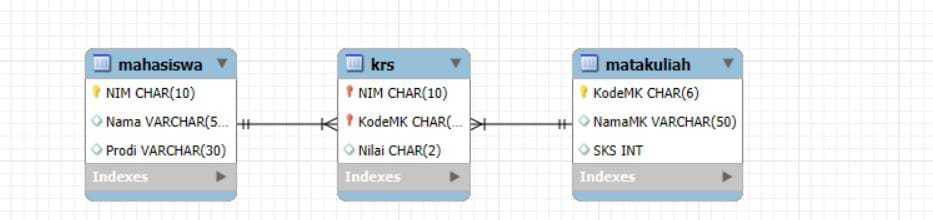
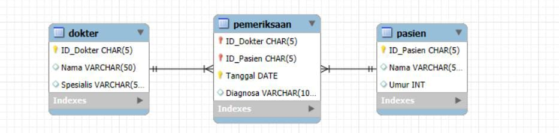
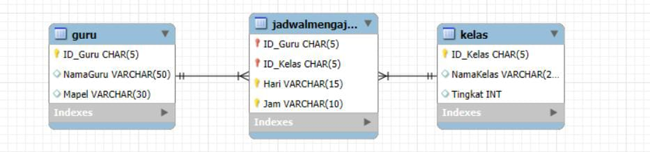
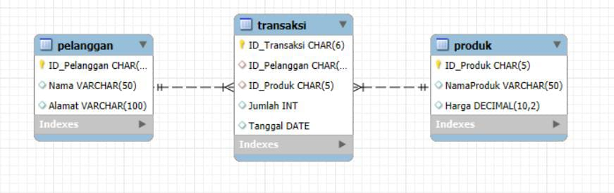
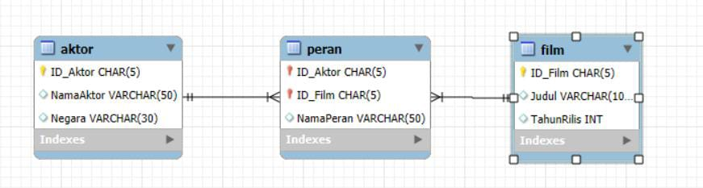

Tonton video YouTube langsung di blog ini!
Intersection pada ERD digunakan untuk merepresentasikan hubungan many-to-many yang dipecah menjadi dua relasi one-to-many menggunakan tabel penghubung (intersection entity).
Seorang Mahasiswa dapat mengambil banyak Mata Kuliah, dan satu Mata Kuliah juga bisa diambil oleh banyak Mahasiswa. Oleh karena itu, dibuat tabel penghubung bernama KRS untuk mencatat data pengambilan mata kuliah oleh mahasiswa.

Seorang Dokter bisa memeriksa banyak Pasien, dan satu Pasien bisa diperiksa oleh beberapa Dokter. Untuk merekam data pemeriksaan, digunakan tabel penghubung Pemeriksaan yang menyimpan tanggal dan hasil diagnosa.

Seorang Guru dapat mengajar di beberapa Kelas, dan satu Kelas juga bisa diajar oleh beberapa Guru. Relasi ini dihubungkan melalui tabel JadwalMengajar yang berisi hari dan jam mengajar.

Seorang Pelanggan dapat membeli banyak Produk, dan satu Produk bisa dibeli oleh banyak Pelanggan. Hubungan ini diwakili oleh tabel Transaksi yang mencatat jumlah dan tanggal pembelian.

Seorang Aktor bisa bermain di banyak Film, dan satu Film bisa dibintangi oleh banyak Aktor. Untuk mencatat siapa memerankan siapa, digunakan tabel penghubung Peran.
